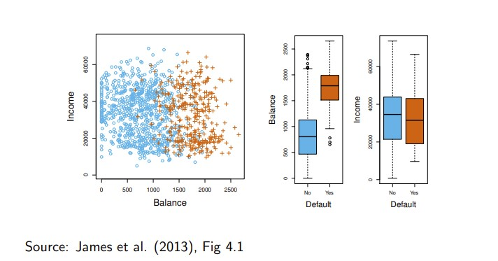
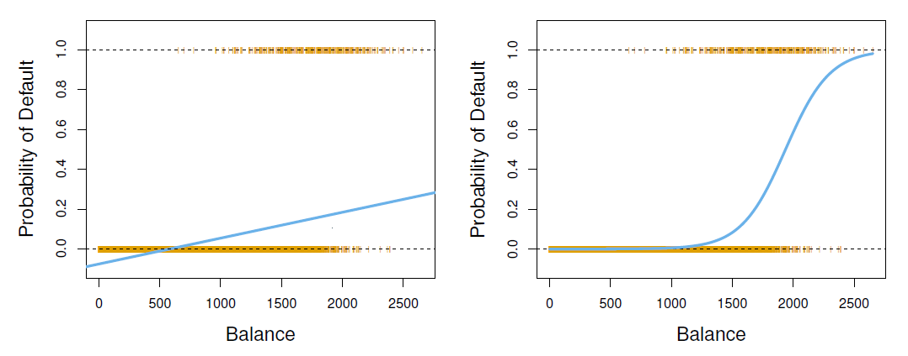

회귀에서는 반응변수 \(Y\) 가 연속형 수치로 주어진다. 반면 분류(classification) 에서는 \(Y\) 가 범주를 나타낸다. 예를 들어 환자의 질병 유무, 이메일의 스팸 여부, 신용카드 거래의 부정 사용 여부처럼 관측치를 미리 정의된 범주에 배정하는 문제가 분류에 해당한다.
범주들의 집합을 \(\mathcal{C}\) 라고 하고 설명변수 벡터를 \(X\) 라고 하자. 분류의 목표는 새로운 \(X\) 가 주어졌을 때
\[
C(X)\in\mathcal{C}
\]
를 예측하는 분류 규칙 \(C(\cdot)\) 을 만드는 것이다. 실제 분석에서는 단순한 범주 예측뿐 아니라
\[
P(Y=k\mid X),\qquad k\in\mathcal{C}
\]
와 같은 범주별 확률 을 추정하는 것이 더 중요할 때가 많다. 예를 들어 보험 청구가 부정 청구인지 단정적으로 분류하는 것보다 부정 청구일 확률을 제시하면 조사 우선순위를 정하는 데 도움이 된다.

선형회귀를 분류에 사용할 수 있는가
이항 반응변수를 다음과 같이 코딩했다고 하자.
\[
Y=\begin{cases}
0,& \text{아니오}\cr
1,& \text{예}
\end{cases}
\]
이때
\[
E(Y\mid X)=P(Y=1\mid X)
\]
이므로 선형회귀를 이용해 조건부 확률을 추정할 수 있을 것처럼 보인다. 그러나 선형회귀의 적합값은 0보다 작거나 1보다 커질 수 있다. 또한 범주가 세 개 이상이면 임의의 숫자 코딩이 범주 사이에 존재하지 않는 순서와 간격을 부여한다. 따라서 일반적으로 로지스틱 회귀, 판별분석, 최근접이웃, 의사결정나무, 서포트 벡터 머신 같은 전용 분류 방법을 사용한다.

로짓 모형과 프로빗 모형
단순 로지스틱 회귀
\(p(X)=P(Y=1\mid X)\) 라고 하자. 단순 로지스틱 회귀모형은
\[
p(X)=\frac{\exp(\beta_0+\beta_1X)}{1+\exp(\beta_0+\beta_1X)}
\]
으로 정의한다. 이 식은 어떤 \(X\) 가 주어져도 \(p(X)\) 를 0과 1 사이에 둔다. 양변을 변환하면
\[
\log\left\{\frac{p(X)}{1-p(X)}\right\}=\beta_0+\beta_1X
\]
을 얻는다. \(p/(1-p)\) 는 오즈(odds) , 그 로그는 로그 오즈(log odds) 또는 로짓(logit) 이라 한다. \(X\) 가 한 단위 증가할 때 오즈는 \(\exp(\beta_1)\) 배가 된다.
모수는 보통 최대우도법(maximum likelihood)으로 추정한다. 관측값이 서로 독립이라고 할 때 우도함수는
\[
L(\beta)=\prod_{i:y_i=1}p(x_i)\prod_{i:y_i=0}\{1-p(x_i)\}
\]
이며, 관측된 0과 1이 가장 그럴듯하게 나타나도록 하는 \(\beta\) 를 선택한다.
library (ISLR2)<- glm (~ balance,data = Default,family = binomial (link = "logit" )summary (fit_logit)
#>
#> Call:
#> glm(formula = default ~ balance, family = binomial(link = "logit"),
#> data = Default)
#>
#> Coefficients:
#> Estimate Std. Error z value Pr(>|z|)
#> (Intercept) -1.065e+01 3.612e-01 -29.49 <2e-16 ***
#> balance 5.499e-03 2.204e-04 24.95 <2e-16 ***
#> ---
#> Signif. codes: 0 '***' 0.001 '**' 0.01 '*' 0.05 '.' 0.1 ' ' 1
#>
#> (Dispersion parameter for binomial family taken to be 1)
#>
#> Null deviance: 2920.6 on 9999 degrees of freedom
#> Residual deviance: 1596.5 on 9998 degrees of freedom
#> AIC: 1600.5
#>
#> Number of Fisher Scoring iterations: 8
잔액이 1,000달러와 2,000달러인 고객의 채무불이행 확률은 다음과 같이 예측할 수 있다.
<- data.frame (balance = c (1000 , 2000 ))predict (fit_logit, newdata = new_customer, type = "response" )
#> 1 2
#> 0.005752145 0.585769370
범주형 설명변수도 사용할 수 있다. student가 기준범주와 비교해 채무불이행 오즈를 얼마나 바꾸는지 계수와 오즈비로 해석한다.
<- glm (~ student,data = Default,family = binomialsummary (fit_student)
#>
#> Call:
#> glm(formula = default ~ student, family = binomial, data = Default)
#>
#> Coefficients:
#> Estimate Std. Error z value Pr(>|z|)
#> (Intercept) -3.50413 0.07071 -49.55 < 2e-16 ***
#> studentYes 0.40489 0.11502 3.52 0.000431 ***
#> ---
#> Signif. codes: 0 '***' 0.001 '**' 0.01 '*' 0.05 '.' 0.1 ' ' 1
#>
#> (Dispersion parameter for binomial family taken to be 1)
#>
#> Null deviance: 2920.6 on 9999 degrees of freedom
#> Residual deviance: 2908.7 on 9998 degrees of freedom
#> AIC: 2912.7
#>
#> Number of Fisher Scoring iterations: 6
#> (Intercept) studentYes
#> 0.03007299 1.49913321
다중 로지스틱 회귀
설명변수가 \(p\) 개이면
\[
p(X)=\frac{\exp(X^T\beta)}{1+\exp(X^T\beta)},
\qquad
X^T\beta=\beta_0+\beta_1X_1+\cdots+\beta_pX_p
\]
이고,
\[
\log\left\{\frac{p(X)}{1-p(X)}\right\}
=\beta_0+\beta_1X_1+\cdots+\beta_pX_p
\]
이다. 각 계수는 다른 설명변수를 일정하게 유지한 상태에서 해석해야 한다.
<- glm (~ balance + income + student,data = Default,family = binomialsummary (fit_multiple)
#>
#> Call:
#> glm(formula = default ~ balance + income + student, family = binomial,
#> data = Default)
#>
#> Coefficients:
#> Estimate Std. Error z value Pr(>|z|)
#> (Intercept) -1.087e+01 4.923e-01 -22.080 < 2e-16 ***
#> balance 5.737e-03 2.319e-04 24.738 < 2e-16 ***
#> income 3.033e-06 8.203e-06 0.370 0.71152
#> studentYes -6.468e-01 2.363e-01 -2.738 0.00619 **
#> ---
#> Signif. codes: 0 '***' 0.001 '**' 0.01 '*' 0.05 '.' 0.1 ' ' 1
#>
#> (Dispersion parameter for binomial family taken to be 1)
#>
#> Null deviance: 2920.6 on 9999 degrees of freedom
#> Residual deviance: 1571.5 on 9996 degrees of freedom
#> AIC: 1579.5
#>
#> Number of Fisher Scoring iterations: 8
#> (Intercept) balance income studentYes
#> 1.903854e-05 1.005753e+00 1.000003e+00 5.237317e-01
교란의 예
학생은 평균적으로 비학생보다 잔액이 높을 수 있다. student만 포함한 단순모형에서는 학생의 채무불이행 확률이 더 높아 보이지만, balance를 함께 보정하면 학생 여부의 조건부 효과가 달라질 수 있다. 이는 주변적 관계와 조건부 관계가 일치하지 않을 수 있음을 보여준다.
aggregate (balance ~ student, data = Default, mean)<- glm (default ~ student, data = Default, family = binomial)<- glm (default ~ student + balance, data = Default, family = binomial)cbind (= coef (fit_simple),= coef (fit_adjusted)[names (coef (fit_simple))]
#> 단순모형 보정모형
#> (Intercept) -3.5041278 -10.7494959
#> studentYes 0.4048871 -0.7148776
프로빗 모형
프로빗 모형은 표준정규 누적분포함수 \(\Phi(\cdot)\) 를 사용한다.
\[
P(Y=1\mid X)=\Phi(X^T\beta),
\qquad
\Phi(z)=\int_{-\infty}^{z}\frac{1}{\sqrt{2\pi}}e^{-u^2/2}\,du
\]
로짓과 프로빗은 모두 확률을 0과 1 사이로 제한하며, 중앙부에서는 매우 비슷한 모양을 보인다. 다만 계수의 척도가 서로 다르므로 계수값을 직접 비교해서는 안 된다.
par (mfrow = c (1 , 2 ))curve (plogis (x), from = - 4 , to = 4 ,xlab = "z" , ylab = "확률" , main = "로지스틱 누적분포" )curve (pnorm (x), from = - 4 , to = 4 ,xlab = "z" , ylab = "확률" , main = "정규 누적분포" )
# 노동시장 참여 여부 예제 library (wooldridge)data (mroz)<- subset (mroz, complete.cases (inlf, nwifeinc, educ, exper, expersq, age, kidslt6, kidsge6))<- glm (~ nwifeinc + educ + exper + expersq + age + kidslt6 + kidsge6,data = mroz_complete,family = binomial (link = "logit" )<- glm (~ nwifeinc + educ + exper + expersq + age + kidslt6 + kidsge6,data = mroz_complete,family = binomial (link = "probit" )summary (mroz_logit)
#>
#> Call:
#> glm(formula = inlf ~ nwifeinc + educ + exper + expersq + age +
#> kidslt6 + kidsge6, family = binomial(link = "logit"), data = mroz_complete)
#>
#> Coefficients:
#> Estimate Std. Error z value Pr(>|z|)
#> (Intercept) 0.425452 0.860365 0.495 0.62095
#> nwifeinc -0.021345 0.008421 -2.535 0.01126 *
#> educ 0.221170 0.043439 5.091 3.55e-07 ***
#> exper 0.205870 0.032057 6.422 1.34e-10 ***
#> expersq -0.003154 0.001016 -3.104 0.00191 **
#> age -0.088024 0.014573 -6.040 1.54e-09 ***
#> kidslt6 -1.443354 0.203583 -7.090 1.34e-12 ***
#> kidsge6 0.060112 0.074789 0.804 0.42154
#> ---
#> Signif. codes: 0 '***' 0.001 '**' 0.01 '*' 0.05 '.' 0.1 ' ' 1
#>
#> (Dispersion parameter for binomial family taken to be 1)
#>
#> Null deviance: 1029.75 on 752 degrees of freedom
#> Residual deviance: 803.53 on 745 degrees of freedom
#> AIC: 819.53
#>
#> Number of Fisher Scoring iterations: 4
#>
#> Call:
#> glm(formula = inlf ~ nwifeinc + educ + exper + expersq + age +
#> kidslt6 + kidsge6, family = binomial(link = "probit"), data = mroz_complete)
#>
#> Coefficients:
#> Estimate Std. Error z value Pr(>|z|)
#> (Intercept) 0.2700736 0.5080782 0.532 0.59503
#> nwifeinc -0.0120236 0.0049392 -2.434 0.01492 *
#> educ 0.1309040 0.0253987 5.154 2.55e-07 ***
#> exper 0.1233472 0.0187587 6.575 4.85e-11 ***
#> expersq -0.0018871 0.0005999 -3.145 0.00166 **
#> age -0.0528524 0.0084624 -6.246 4.22e-10 ***
#> kidslt6 -0.8683247 0.1183773 -7.335 2.21e-13 ***
#> kidsge6 0.0360056 0.0440303 0.818 0.41350
#> ---
#> Signif. codes: 0 '***' 0.001 '**' 0.01 '*' 0.05 '.' 0.1 ' ' 1
#>
#> (Dispersion parameter for binomial family taken to be 1)
#>
#> Null deviance: 1029.7 on 752 degrees of freedom
#> Residual deviance: 802.6 on 745 degrees of freedom
#> AIC: 818.6
#>
#> Number of Fisher Scoring iterations: 4
다범주 로지스틱 회귀
반응범주가 세 개 이상이고 자연스러운 순서가 없다면 다항 로지스틱 회귀(multinomial logistic regression)를 사용할 수 있다. 기준범주를 하나 정하고 나머지 범주 각각에 대해 로그 오즈를 모형화한다.
\[
\log\frac{P(Y=k\mid X)}{P(Y=K\mid X)}
=\beta_{k0}+\beta_{k1}X_1+\cdots+\beta_{kp}X_p,
\qquad k=1,\ldots,K-1
\]
모든 범주의 예측확률을 계산한 뒤 가장 큰 확률을 가진 범주로 분류하거나, 비용과 목적에 따라 서로 다른 임계값을 적용할 수 있다.
베이즈 정리와 판별분석
분류에서 베이즈 정리는 다음과 같이 쓸 수 있다.
\[
P(Y=k\mid X=x)
=\frac{\pi_k f_k(x)}{\sum_{\ell=1}^{K}\pi_{\ell}f_{\ell}(x)}
\]
여기서 \(\pi_k=P(Y=k)\) 는 사전확률, \(f_k(x)\) 는 \(Y=k\) 일 때 \(X\) 의 조건부 밀도이다. 판별분석은 각 범주에서 \(X\) 가 따르는 분포를 가정해 \(f_k(x)\) 를 추정하고 사후확률이 가장 큰 범주를 선택한다.
선형판별분석
선형판별분석(linear discriminant analysis, LDA)은 범주별 설명변수가 다변량 정규분포를 따르며 모든 범주가 동일한 공분산행렬 \(\Sigma\) 를 공유한다고 가정한다.
\[
X\mid Y=k\sim N(\mu_k,\Sigma)
\]
이때 판별점수는
\[
\delta_k(x)=x^T\Sigma^{-1}\mu_k
-\frac{1}{2}\mu_k^T\Sigma^{-1}\mu_k+\log\pi_k
\]
이며, \(\delta_k(x)\) 가 가장 큰 범주로 분류한다. 범주 사이의 결정경계가 선형이므로 LDA라고 부른다.
library (MASS)set.seed (123 )<- sample (seq_len (nrow (iris)), size = floor (0.7 * nrow (iris)))<- iris[idx, ]<- iris[- idx, ]<- lda (Species ~ ., data = train_iris)<- predict (fit_lda_iris, newdata = test_iris)<- table (= test_iris$ Species,= pred_lda_iris$ class
#> 예측
#> 실제 setosa versicolor virginica
#> setosa 14 0 0
#> versicolor 0 17 1
#> virginica 0 0 13
mean (pred_lda_iris$ class == test_iris$ Species)
오류 유형과 임계값
이항분류의 혼동행렬(confusion matrix)은 다음 네 결과를 구분한다.
실제 양성
진양성(TP)
위음성(FN)
실제 음성
위양성(FP)
진음성(TN)
주요 성능지표는 다음과 같다.
\[
\text{민감도}=\frac{TP}{TP+FN},\qquad
\text{특이도}=\frac{TN}{TN+FP}
\]
\[
\text{정확도}=\frac{TP+TN}{TP+TN+FP+FN}
\]
확률이 0.5보다 클 때 양성으로 분류하는 규칙이 항상 최선은 아니다. 중대한 질병을 놓치는 비용이 큰 경우에는 임계값을 낮춰 민감도를 높일 수 있다. 반대로 위양성의 비용이 크면 임계값을 높인다.
<- predict (fit_multiple, type = "response" )<- Default$ default<- function (cutoff) {<- factor (ifelse (prob_default > cutoff, "Yes" , "No" ),levels = levels (actual_default)table (실제 = actual_default, 예측 = predicted)classification_table (0.50 )
#> 예측
#> 실제 No Yes
#> No 9627 40
#> Yes 228 105
classification_table (0.20 )
#> 예측
#> 실제 No Yes
#> No 9390 277
#> Yes 130 203
이차판별분석
이차판별분석(quadratic discriminant analysis, QDA)은 범주마다 서로 다른 공분산행렬을 허용한다.
\[
X\mid Y=k\sim N(\mu_k,\Sigma_k)
\]
이에 따라 결정경계가 이차식이 된다. QDA는 LDA보다 유연하지만 추정해야 할 모수가 많아 표본이 작을 때 분산이 커질 수 있다. 실제 문제에서는 교차검증으로 두 방법을 비교해야 한다.
<- qda (Species ~ ., data = train_iris)<- predict (fit_qda_iris, newdata = test_iris)$ classtable (실제 = test_iris$ Species, 예측 = pred_qda_iris)
#> 예측
#> 실제 setosa versicolor virginica
#> setosa 14 0 0
#> versicolor 0 17 1
#> virginica 0 0 13
mean (pred_qda_iris == test_iris$ Species)
나이브 베이즈
나이브 베이즈(naive Bayes)는 범주가 주어졌을 때 설명변수들이 조건부 독립이라고 가정한다.
\[
f_k(x)=\prod_{j=1}^{p}f_{kj}(x_j)
\]
독립 가정은 현실에서 완전히 성립하지 않는 경우가 많지만, 고차원 자료에서 추정량의 분산을 크게 낮춰 좋은 예측력을 보일 수 있다.
library (e1071)<- naiveBayes (Species ~ ., data = train_iris)<- predict (fit_nb_iris, newdata = test_iris)table (실제 = test_iris$ Species, 예측 = pred_nb_iris)
#> 예측
#> 실제 setosa versicolor virginica
#> setosa 14 0 0
#> versicolor 0 18 0
#> virginica 0 0 13
mean (pred_nb_iris == test_iris$ Species)
K-최근접이웃 분류
K-최근접이웃(K-nearest neighbors, KNN)은 새로운 관측치 \(x_0\) 에 가장 가까운 \(K\) 개 훈련 관측치를 찾고, 그 안에서 가장 빈도가 높은 범주를 예측한다.
\[
P(Y=j\mid X=x_0)
\approx \frac{1}{K}\sum_{i\in N_0}I(y_i=j)
\]
\(K\) 가 작으면 결정경계가 매우 유연해져 분산이 커지고, \(K\) 가 크면 경계가 매끄러워지지만 편향이 커질 수 있다. 거리 기반 방법이므로 변수의 단위가 다르면 반드시 표준화하는 것이 좋다.
library (class)<- scale (train_iris[, 1 : 4 ])<- attr (x_train, "scaled:center" )<- attr (x_train, "scaled:scale" )<- scale (test_iris[, 1 : 4 ], center = center, scale = scale_value)<- knn (train = x_train,test = x_test,cl = train_iris$ Species,k = 5 table (실제 = test_iris$ Species, 예측 = pred_knn_iris)
#> 예측
#> 실제 setosa versicolor virginica
#> setosa 14 0 0
#> versicolor 0 17 1
#> virginica 0 0 13
mean (pred_knn_iris == test_iris$ Species)
주식시장 방향 예제
Smarket 자료를 이용해 전일 수익률로 다음 날 시장 방향을 예측해 보자. 시간 순서를 보존하기 위해 2005년 이전을 훈련자료, 2005년을 시험자료로 사용한다.
library (ISLR2)data (Smarket)<- Smarket$ Year < 2005 <- ! train_market<- Direction ~ Lag1 + Lag2
<- glm (data = Smarket,family = binomial,subset = train_market<- lda (market_formula, data = Smarket, subset = train_market)<- qda (market_formula, data = Smarket, subset = train_market)<- naiveBayes (market_formula, data = Smarket, subset = train_market)<- Smarket[test_market, ]<- market_test$ Direction<- factor (ifelse (predict (fit_market_logit, market_test, type = "response" ) > 0.5 , "Up" , "Down" ),levels = levels (actual_market)<- predict (fit_market_lda, market_test)$ class<- predict (fit_market_qda, market_test)$ class<- predict (fit_market_nb, market_test)<- data.frame (= c ("로지스틱 회귀" , "LDA" , "QDA" , "나이브 베이즈" ),= c (mean (pred_market_logit == actual_market),mean (pred_market_lda == actual_market),mean (pred_market_qda == actual_market),mean (pred_market_nb == actual_market)
방법 선택에 관한 정리
로지스틱 회귀는 확률과 오즈비 해석이 중요할 때 유용하다.
LDA는 범주별 분포가 정규분포에 가깝고 공분산이 유사할 때 안정적이다.
QDA는 비선형 경계를 허용하지만 더 많은 자료가 필요하다.
나이브 베이즈는 설명변수가 많고 조건부 독립 가정이 근사적으로 타당할 때 효과적이다.
KNN은 매우 유연하지만 척도와 차원의 저주에 민감하다.
최종 선택은 훈련오차가 아니라 독립된 시험자료 또는 교차검증으로 평가해야 한다.
분류모형의 목적은 단순히 정확도를 최대화하는 데 그치지 않는다. 관심 범주의 유병률, 위양성과 위음성의 비용, 확률 보정(calibration), 해석 가능성을 함께 고려해야 한다.